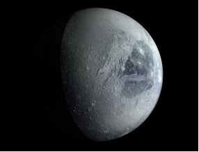

Comprendo para saber
Alumno:
Comprendo para saber
Alumno:
El texto de divulgación científica es un texto expositivo que desarrolla información relacionada con la ciencia, de manera sencilla para que lo entienda el gran público. Emplea palabras técnicas, es decir, términos propios de la ciencia que trata, pero con aclaraciones que permiten entenderlos.
Estructura del texto de divulgación científica
|
Título |
|
|
Debe atraer la atención de los lectores y se debe evitar palabras que no sean accesibles al lector cotidiano o el uso de fórmulas. Se escribe siempre al final. |
|
|
Introducción |
|
|
* Presenta el tema. * Motiva a seguir leyendo. * Recoge a manera de resumen los principales aspectos de los que tratará el tema. Responde la pregunta: ¿cuál es el problema, el hecho, el descubrimiento que se quiere presentar? |
|
|
Desarrollo |
|
|
* Trata y desarrolla una sola idea de la mejor forma posible. * El desarrollo de la idea permite la exposición o explicación de los hechos que pueden dar respuesta a algunas o todas las preguntas: qué, quién, cómo, cuándo, dónde y por qué. En este sentido se ahonda lo que pudo ya establecerse en la introducción. * Si el cuerpo del artículo tiene más de un párrafo se debe seguir una línea prevista de antemano. Por ejemplo, de lo más importante a lo menos importante o viceversa. * La información que se ofrece debe ser veraz y confiable para el lector. |
|
|
Conclusión |
|
|
Para formularla ayuda la pregunta: ¿Qué importancia tiene el descubrimiento o hecho referido? ¿Qué se aprende a partir de lo expuesto en la introducción y en el desarrollo? También es posible dejar una interrogante que lleve al lector a la reflexión. |
Características de los textos de divulgación científica
|
Definiciones |
Se explica o se describe algún o algunos de los conceptos más importantes que pueden estar presentes en el desarrollo del artículo. las zooxantelas, unas algas microscópicas que viven en los tejidos de los corales y con las que mantienen una relación simbiótica, |
|
Analogías |
Facilitan que algunos conceptos abstractos puedan ser entendidos con facilidad. |
|
Ejemplos |
Ayudan a demostrar o aclarar un concepto, una teoría, etc |
|
Lenguaje denotativo |
Este tipo de texto no permite el uso del lenguaje connotativo. Las palabras son lo que significan, no tienen ninguna carga subjetiva. Luz solar, humanos, proteínas, microscópicas, 90%, etc. |
|
Lenguaje accesible |
Se emplea un lenguaje cotidiano. Se evita el uso excesivo de términos técnicos. Exceso, perjudicial, refugio, fotosíntesis, sobreviven, rojo brillante, etc. |
|
No abuso en el uso de fuentes, citas |
Un texto de divulgación está dirigido a un público no especializado, muchas veces sin conocimientos del tema. Este tipo de artículos no está dirigido a expertos o especialistas Se usa solamente un término técnico o especializado: zooxantelas, que fue definido después del primer uso. |
|
Apoyos |
Se puede utilizar de forma moderada y pertinente fotografías, ilustraciones, cuadros, entre otros. |
Pautas para escribir un texto de divulgación científica
Para escribir un texto científico divulgativo, es importante responder las siguientes preguntas.
¿Para qué escribo? |
Determina, por una parte, la motivación que tienes para realizar el escrito y, por otra parte, lo que esperas lograr con el artículo. |
¿Qué voy a decir o comunicar? |
Delimita o especifica con la mayor precisión lo que quieres comunicar |
¿Qué actualidad tiene el tema? |
Si lo que deseas comunicar no tiene vigencia, difícilmente leerán el artículo. |
¿Qué información hay sobre el tema? |
Define y delimita la información. De esta manera, lo que quieres comunicar no será algo que ya se sabe y que, por lo tanto, no aportará. |
¿Quiénes son los receptores? |
Precisa las características de los lectores del artículo. No es lo mismo niños que adultos; personas con un nivel de instrucción que sin nivel. |
¿Cómo lo voy a decir? |
En función de los receptores y de lo que quieres transmitir, establece una forma, un estilo, el tipo de lenguaje que usarás, etc. |
¿Qué extensión tendrá el artículo? |
En función del tema, de lo que se quiere comunicar y de quiénes sean los receptores, establece la extensión del artículo. |
 Aplico para aprender
Aplico para aprender
1.Lee el siguiente texto y realiza la actividad propuesta a continuación
En la superficie de Plutón hay cuchillas gigantes de hielo altas como rascacielos
La sonda espacial New Horizons de la NASA fue lanzada en enero de 2006 desde el cabo Cañaveral, en el estado de Florida, y se aproximó a Plutón en julio de 2015, descubriendo entre otras cosas unas extrañas formaciones geológicas que parecían cuchillas gigantes de hielo. El origen de estas curiosas formaciones ha sido un misterio hasta ahora: los científicos han comprobado que están hechas casi completamente de metano helado y probablemente se formaron por un tipo específico de erosión que desgastó la superficie, creando picos espectaculares y abismos profundos, según explicó ayer la NASA. El estudio ha sido publicado en Icarus.
En nuestro planeta hay unas formaciones similares: los penitentes, unos pináculos de nieve o hielo que crecen en los Andes áridos, por encima de los 4.000 metros, y que fueron descritos por Charles Darwin. Sin embargo, estos penitentes, denominados así por su parecido a los penitentes de las procesiones católicas, alcanzan unos pocos metros de

altura en la Tierra, mientras que en Plutón son tan altos como un rascacielos de Nueva York, y eso que Plutón solo tiene un diámetro de unos 2.370 kilómetros.
Las abruptas formaciones geológicas de Plutón se encuentran en las regiones más altas, cerca del ecuador, y están relacionadas con el complejo sistema climático e historia geológica del planeta enano. “Resulta que Plutón experimenta variaciones climáticas y, a veces, cuando hace un poco más de calor, el metano helado comienza a evaporarse”, dice Jeffrey Moore, el autor principal del estudio. Los científicos usan el término “sublimación” para referirse a este proceso en el cual el hielo se transforma directamente en gas sin pasar por el estado líquido. Las condiciones climáticas tempranas de Plutón favorecieron la congelación del metano en las superficies más elevadas, pero el tiempo progresó y esas condiciones cambiaron, calentándose el hielo y transformándose en gas.